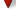

<!doctype html>
<html lang="en">
    <head>
        <meta charset="utf-8">
        <meta http-equiv="X-UA-Compatible" content="IE=edge">
        <meta name="viewport" content="initial-scale=1,user-scalable=no,maximum-scale=1,width=device-width">
        <meta name="mobile-web-app-capable" content="yes">
        <meta name="apple-mobile-web-app-capable" content="yes">
        <link rel="stylesheet" href="css/leaflet.css">
        <link rel="stylesheet" href="css/L.Control.Layers.Tree.css">
        <link rel="stylesheet" href="css/qgis2web.css">
        <link rel="stylesheet" href="css/fontawesome-all.min.css">
        <link rel="stylesheet" href="css/MarkerCluster.css">
        <link rel="stylesheet" href="css/MarkerCluster.Default.css">
        <link rel="stylesheet" href="css/leaflet-control-geocoder.Geocoder.css">
        <link rel="stylesheet" href="css/leaflet-measure.css">
        <style>
        html, body, #map {
            width: 100%;
            height: 100%;
            padding: 0;
            margin: 0;
        }
        </style>
        <title></title>
    </head>
    <body>
        <div id="map">
        </div>
        <script src="js/qgis2web_expressions.js"></script>
        <script src="js/leaflet.js"></script>
        <script src="js/L.Control.Layers.Tree.min.js"></script>
        <script src="js/leaflet.rotatedMarker.js"></script>
        <script src="js/leaflet.pattern.js"></script>
        <script src="js/leaflet-hash.js"></script>
        <script src="js/Autolinker.min.js"></script>
        <script src="js/rbush.min.js"></script>
        <script src="js/labelgun.min.js"></script>
        <script src="js/labels.js"></script>
        <script src="js/leaflet-control-geocoder.Geocoder.js"></script>
        <script src="js/leaflet-measure.js"></script>
        <script src="js/leaflet.markercluster.js"></script>
        <script src="data/BGDProvinces_1.js"></script>
        <script src="data/CountperLocationBD_2.js"></script>
        <script src="data/PortsBD_3.js"></script>
        <script src="data/CompaniesBD_4.js"></script>
        <script>
        var highlightLayer;
        function highlightFeature(e) {
            highlightLayer = e.target;

            if (e.target.feature.geometry.type === 'LineString' || e.target.feature.geometry.type === 'MultiLineString') {
              highlightLayer.setStyle({
                color: '#ffff00',
              });
            } else {
              highlightLayer.setStyle({
                fillColor: '#ffff00',
                fillOpacity: 1
              });
            }
        }
        var map = L.map('map', {
            zoomControl:false, maxZoom:28, minZoom:1
        }).fitBounds([[15.997954219336275,81.36665713938595],[28.37385830258823,100.89439164411289]]);
        var hash = new L.Hash(map);
        map.attributionControl.setPrefix('<a href="https://github.com/tomchadwin/qgis2web" target="_blank">qgis2web</a> &middot; <a href="https://leafletjs.com" title="A JS library for interactive maps">Leaflet</a> &middot; <a href="https://qgis.org">QGIS</a>');
        var autolinker = new Autolinker({truncate: {length: 30, location: 'smart'}});
        // remove popup's row if "visible-with-data"
        function removeEmptyRowsFromPopupContent(content, feature) {
         var tempDiv = document.createElement('div');
         tempDiv.innerHTML = content;
         var rows = tempDiv.querySelectorAll('tr');
         for (var i = 0; i < rows.length; i++) {
             var td = rows[i].querySelector('td.visible-with-data');
             var key = td ? td.id : '';
             if (td && td.classList.contains('visible-with-data') && feature.properties[key] == null) {
                 rows[i].parentNode.removeChild(rows[i]);
             }
         }
         return tempDiv.innerHTML;
        }
        // add class to format popup if it contains media
		function addClassToPopupIfMedia(content, popup) {
			var tempDiv = document.createElement('div');
			tempDiv.innerHTML = content;
			if (tempDiv.querySelector('td img')) {
				popup._contentNode.classList.add('media');
					// Delay to force the redraw
					setTimeout(function() {
						popup.update();
					}, 10);
			} else {
				popup._contentNode.classList.remove('media');
			}
		}
        var zoomControl = L.control.zoom({
            position: 'topleft'
        }).addTo(map);
        var measureControl = new L.Control.Measure({
            position: 'topleft',
            primaryLengthUnit: 'meters',
            secondaryLengthUnit: 'kilometers',
            primaryAreaUnit: 'sqmeters',
            secondaryAreaUnit: 'hectares'
        });
        measureControl.addTo(map);
        document.getElementsByClassName('leaflet-control-measure-toggle')[0].innerHTML = '';
        document.getElementsByClassName('leaflet-control-measure-toggle')[0].className += ' fas fa-ruler';
        var bounds_group = new L.featureGroup([]);
        function setBounds() {
            map.setMaxBounds(map.getBounds());
        }
        map.createPane('pane_OSMStandard_0');
        map.getPane('pane_OSMStandard_0').style.zIndex = 400;
        var layer_OSMStandard_0 = L.tileLayer('http://tile.openstreetmap.org/{z}/{x}/{y}.png', {
            pane: 'pane_OSMStandard_0',
            opacity: 1.0,
            attribution: '<a href="https://www.openstreetmap.org/copyright">© OpenStreetMap contributors, CC-BY-SA</a>',
            minZoom: 1,
            maxZoom: 28,
            minNativeZoom: 0,
            maxNativeZoom: 19
        });
        layer_OSMStandard_0;
        map.addLayer(layer_OSMStandard_0);
        function pop_BGDProvinces_1(feature, layer) {
            layer.on({
                mouseout: function(e) {
                    for (var i in e.target._eventParents) {
                        if (typeof e.target._eventParents[i].resetStyle === 'function') {
                            e.target._eventParents[i].resetStyle(e.target);
                        }
                    }
                },
                mouseover: highlightFeature,
            });
            var popupContent = '<table>\
                    <tr>\
                        <td colspan="2">' + (feature.properties['NAME_2'] !== null ? autolinker.link(String(feature.properties['NAME_2']).replace(/'/g, '\'').toLocaleString()) : '') + '</td>\
                    </tr>\
                    <tr>\
                        <td colspan="2">' + (feature.properties['NAME_3'] !== null ? autolinker.link(String(feature.properties['NAME_3']).replace(/'/g, '\'').toLocaleString()) : '') + '</td>\
                    </tr>\
                </table>';
            var content = removeEmptyRowsFromPopupContent(popupContent, feature);
			layer.on('popupopen', function(e) {
				addClassToPopupIfMedia(content, e.popup);
			});
			layer.bindPopup(content, { maxHeight: 400 });
        }

        function style_BGDProvinces_1_0() {
            return {
                pane: 'pane_BGDProvinces_1',
                opacity: 1,
                color: 'rgba(35,35,35,0.4)',
                dashArray: '',
                lineCap: 'butt',
                lineJoin: 'miter',
                weight: 1.0, 
                fill: true,
                fillOpacity: 1,
                fillColor: 'rgba(152,193,18,0.4)',
                interactive: true,
            }
        }
        map.createPane('pane_BGDProvinces_1');
        map.getPane('pane_BGDProvinces_1').style.zIndex = 401;
        map.getPane('pane_BGDProvinces_1').style['mix-blend-mode'] = 'normal';
        var layer_BGDProvinces_1 = new L.geoJson(json_BGDProvinces_1, {
            attribution: '',
            interactive: true,
            dataVar: 'json_BGDProvinces_1',
            layerName: 'layer_BGDProvinces_1',
            pane: 'pane_BGDProvinces_1',
            onEachFeature: pop_BGDProvinces_1,
            style: style_BGDProvinces_1_0,
        });
        bounds_group.addLayer(layer_BGDProvinces_1);
        map.addLayer(layer_BGDProvinces_1);
        function pop_CountperLocationBD_2(feature, layer) {
            layer.on({
                mouseout: function(e) {
                    for (var i in e.target._eventParents) {
                        if (typeof e.target._eventParents[i].resetStyle === 'function') {
                            e.target._eventParents[i].resetStyle(e.target);
                        }
                    }
                },
                mouseover: highlightFeature,
            });
            var popupContent = '<table>\
                    <tr>\
                        <td colspan="2">' + (feature.properties['NAME_2'] !== null ? autolinker.link(String(feature.properties['NAME_2']).replace(/'/g, '\'').toLocaleString()) : '') + '</td>\
                    </tr>\
                    <tr>\
                        <td colspan="2">' + (feature.properties['NAME_3'] !== null ? autolinker.link(String(feature.properties['NAME_3']).replace(/'/g, '\'').toLocaleString()) : '') + '</td>\
                    </tr>\
                </table>';
            var content = removeEmptyRowsFromPopupContent(popupContent, feature);
			layer.on('popupopen', function(e) {
				addClassToPopupIfMedia(content, e.popup);
			});
			layer.bindPopup(content, { maxHeight: 400 });
        }

        function style_CountperLocationBD_2_0(feature) {
            if (feature.properties['NUMPOINTS'] >= 0.000000 && feature.properties['NUMPOINTS'] <= 2.000000 ) {
                return {
                pane: 'pane_CountperLocationBD_2',
                opacity: 1,
                color: 'rgba(35,35,35,0.2)',
                dashArray: '',
                lineCap: 'butt',
                lineJoin: 'miter',
                weight: 1.0, 
                fill: true,
                fillOpacity: 1,
                fillColor: 'rgba(11,4,5,0.2)',
                interactive: true,
            }
            }
            if (feature.properties['NUMPOINTS'] >= 2.000000 && feature.properties['NUMPOINTS'] <= 4.000000 ) {
                return {
                pane: 'pane_CountperLocationBD_2',
                opacity: 1,
                color: 'rgba(35,35,35,0.2)',
                dashArray: '',
                lineCap: 'butt',
                lineJoin: 'miter',
                weight: 1.0, 
                fill: true,
                fillOpacity: 1,
                fillColor: 'rgba(62,53,107,0.2)',
                interactive: true,
            }
            }
            if (feature.properties['NUMPOINTS'] >= 4.000000 && feature.properties['NUMPOINTS'] <= 6.000000 ) {
                return {
                pane: 'pane_CountperLocationBD_2',
                opacity: 1,
                color: 'rgba(35,35,35,0.2)',
                dashArray: '',
                lineCap: 'butt',
                lineJoin: 'miter',
                weight: 1.0, 
                fill: true,
                fillOpacity: 1,
                fillColor: 'rgba(53,123,163,0.2)',
                interactive: true,
            }
            }
            if (feature.properties['NUMPOINTS'] >= 6.000000 && feature.properties['NUMPOINTS'] <= 8.000000 ) {
                return {
                pane: 'pane_CountperLocationBD_2',
                opacity: 1,
                color: 'rgba(35,35,35,0.2)',
                dashArray: '',
                lineCap: 'butt',
                lineJoin: 'miter',
                weight: 1.0, 
                fill: true,
                fillOpacity: 1,
                fillColor: 'rgba(75,194,173,0.2)',
                interactive: true,
            }
            }
            if (feature.properties['NUMPOINTS'] >= 8.000000 && feature.properties['NUMPOINTS'] <= 15.000000 ) {
                return {
                pane: 'pane_CountperLocationBD_2',
                opacity: 1,
                color: 'rgba(35,35,35,0.2)',
                dashArray: '',
                lineCap: 'butt',
                lineJoin: 'miter',
                weight: 1.0, 
                fill: true,
                fillOpacity: 1,
                fillColor: 'rgba(222,245,229,0.2)',
                interactive: true,
            }
            }
        }
        map.createPane('pane_CountperLocationBD_2');
        map.getPane('pane_CountperLocationBD_2').style.zIndex = 402;
        map.getPane('pane_CountperLocationBD_2').style['mix-blend-mode'] = 'normal';
        var layer_CountperLocationBD_2 = new L.geoJson(json_CountperLocationBD_2, {
            attribution: '',
            interactive: true,
            dataVar: 'json_CountperLocationBD_2',
            layerName: 'layer_CountperLocationBD_2',
            pane: 'pane_CountperLocationBD_2',
            onEachFeature: pop_CountperLocationBD_2,
            style: style_CountperLocationBD_2_0,
        });
        bounds_group.addLayer(layer_CountperLocationBD_2);
        map.addLayer(layer_CountperLocationBD_2);
        function pop_PortsBD_3(feature, layer) {
            layer.on({
                mouseout: function(e) {
                    for (var i in e.target._eventParents) {
                        if (typeof e.target._eventParents[i].resetStyle === 'function') {
                            e.target._eventParents[i].resetStyle(e.target);
                        }
                    }
                },
                mouseover: highlightFeature,
            });
            var popupContent = '<table>\
                    <tr>\
                        <th scope="row">Port</th>\
                        <td class="visible-with-data" id="Port">' + (feature.properties['Port'] !== null ? autolinker.link(String(feature.properties['Port']).replace(/'/g, '\'').toLocaleString()) : '') + '</td>\
                    </tr>\
                </table>';
            var content = removeEmptyRowsFromPopupContent(popupContent, feature);
			layer.on('popupopen', function(e) {
				addClassToPopupIfMedia(content, e.popup);
			});
			layer.bindPopup(content, { maxHeight: 400 });
        }

        function style_PortsBD_3_0() {
            return {
                pane: 'pane_PortsBD_3',
        rotationAngle: 0.0,
        rotationOrigin: 'center center',
        icon: L.icon({
            iconUrl: 'markers/PortsBD_3.svg',
            iconSize: [41.79999999999998, 41.79999999999998]
        }),
                interactive: true,
            }
        }
        map.createPane('pane_PortsBD_3');
        map.getPane('pane_PortsBD_3').style.zIndex = 403;
        map.getPane('pane_PortsBD_3').style['mix-blend-mode'] = 'normal';
        var layer_PortsBD_3 = new L.geoJson(json_PortsBD_3, {
            attribution: '',
            interactive: true,
            dataVar: 'json_PortsBD_3',
            layerName: 'layer_PortsBD_3',
            pane: 'pane_PortsBD_3',
            onEachFeature: pop_PortsBD_3,
            pointToLayer: function (feature, latlng) {
                var context = {
                    feature: feature,
                    variables: {}
                };
                return L.marker(latlng, style_PortsBD_3_0(feature));
            },
        });
        bounds_group.addLayer(layer_PortsBD_3);
        map.addLayer(layer_PortsBD_3);
        function pop_CompaniesBD_4(feature, layer) {
            layer.on({
                mouseout: function(e) {
                    for (var i in e.target._eventParents) {
                        if (typeof e.target._eventParents[i].resetStyle === 'function') {
                            e.target._eventParents[i].resetStyle(e.target);
                        }
                    }
                },
                mouseover: highlightFeature,
            });
            var popupContent = '<table>\
                    <tr>\
                        <th scope="row">Company</th>\
                        <td class="visible-with-data" id="Company">' + (feature.properties['Company'] !== null ? autolinker.link(String(feature.properties['Company']).replace(/'/g, '\'').toLocaleString()) : '') + '</td>\
                    </tr>\
                    <tr>\
                        <th scope="row">Latitude</th>\
                        <td class="visible-with-data" id="Latitude">' + (feature.properties['Latitude'] !== null ? autolinker.link(String(feature.properties['Latitude']).replace(/'/g, '\'').toLocaleString()) : '') + '</td>\
                    </tr>\
                    <tr>\
                        <th scope="row">Longitude</th>\
                        <td class="visible-with-data" id="Longitude">' + (feature.properties['Longitude'] !== null ? autolinker.link(String(feature.properties['Longitude']).replace(/'/g, '\'').toLocaleString()) : '') + '</td>\
                    </tr>\
                    <tr>\
                        <th scope="row">City</th>\
                        <td class="visible-with-data" id="City">' + (feature.properties['City'] !== null ? autolinker.link(String(feature.properties['City']).replace(/'/g, '\'').toLocaleString()) : '') + '</td>\
                    </tr>\
                    <tr>\
                        <th scope="row">Address</th>\
                        <td class="visible-with-data" id="Address">' + (feature.properties['Address'] !== null ? autolinker.link(String(feature.properties['Address']).replace(/'/g, '\'').toLocaleString()) : '') + '</td>\
                    </tr>\
                    <tr>\
                        <th scope="row">Location Type</th>\
                        <td class="visible-with-data" id="Location Type">' + (feature.properties['Location Type'] !== null ? autolinker.link(String(feature.properties['Location Type']).replace(/'/g, '\'').toLocaleString()) : '') + '</td>\
                    </tr>\
                    <tr>\
                        <th scope="row">Type of Product</th>\
                        <td class="visible-with-data" id="Product">' + (feature.properties['Product'] !== null ? autolinker.link(String(feature.properties['Product']).replace(/'/g, '\'').toLocaleString()) : '') + '</td>\
                    </tr>\
                    <tr>\
                        <th scope="row">Amount (units/year)</th>\
                        <td class="visible-with-data" id="Amount (units/year)">' + (feature.properties['Amount (units/year)'] !== null ? autolinker.link(String(feature.properties['Amount (units/year)']).replace(/'/g, '\'').toLocaleString()) : '') + '</td>\
                    </tr>\
                </table>';
            var content = removeEmptyRowsFromPopupContent(popupContent, feature);
			layer.on('popupopen', function(e) {
				addClassToPopupIfMedia(content, e.popup);
			});
			layer.bindPopup(content, { maxHeight: 400 });
        }

        function style_CompaniesBD_4_0() {
            return {
                pane: 'pane_CompaniesBD_4',
        rotationAngle: 0.0,
        rotationOrigin: 'center center',
        icon: L.icon({
            iconUrl: 'markers/CompaniesBD_4.svg',
            iconSize: [41.8, 41.8]
        }),
                interactive: true,
            }
        }
        map.createPane('pane_CompaniesBD_4');
        map.getPane('pane_CompaniesBD_4').style.zIndex = 404;
        map.getPane('pane_CompaniesBD_4').style['mix-blend-mode'] = 'normal';
        var layer_CompaniesBD_4 = new L.geoJson(json_CompaniesBD_4, {
            attribution: '',
            interactive: true,
            dataVar: 'json_CompaniesBD_4',
            layerName: 'layer_CompaniesBD_4',
            pane: 'pane_CompaniesBD_4',
            onEachFeature: pop_CompaniesBD_4,
            pointToLayer: function (feature, latlng) {
                var context = {
                    feature: feature,
                    variables: {}
                };
                return L.marker(latlng, style_CompaniesBD_4_0(feature));
            },
        });
        var cluster_CompaniesBD_4 = new L.MarkerClusterGroup({showCoverageOnHover: false,
            spiderfyDistanceMultiplier: 2});
        cluster_CompaniesBD_4.addLayer(layer_CompaniesBD_4);

        bounds_group.addLayer(layer_CompaniesBD_4);
        cluster_CompaniesBD_4.addTo(map);
        var osmGeocoder = new L.Control.Geocoder({
            collapsed: true,
            position: 'topleft',
            text: 'Search',
            title: 'Testing'
        }).addTo(map);
        document.getElementsByClassName('leaflet-control-geocoder-icon')[0]
        .className += ' fa fa-search';
        document.getElementsByClassName('leaflet-control-geocoder-icon')[0]
        .title += 'Search for a place';
        var overlaysTree = [
            {label: ' Companies BD', layer: cluster_CompaniesBD_4},
            {label: ' Ports BD', layer: layer_PortsBD_3},
            {label: 'Count per Location BD <br /><table><tr><td style="text-align: center;"></td><td>0 - 2</td></tr><tr><td style="text-align: center;"></td><td>2 - 4</td></tr><tr><td style="text-align: center;"></td><td>4 - 6</td></tr><tr><td style="text-align: center;"></td><td>6 - 8</td></tr><tr><td style="text-align: center;"></td><td>8 - 15</td></tr></table>', layer: layer_CountperLocationBD_2},
            {label: ' BGD Provinces', layer: layer_BGDProvinces_1},
            {label: "OSM Standard", layer: layer_OSMStandard_0},]
        var lay = L.control.layers.tree(null, overlaysTree,{
            //namedToggle: true,
            //selectorBack: false,
            //closedSymbol: '&#8862; &#x1f5c0;',
            //openedSymbol: '&#8863; &#x1f5c1;',
            //collapseAll: 'Collapse all',
            //expandAll: 'Expand all',
            collapsed: true,
        });
        lay.addTo(map);
        setBounds();
        </script>
    </body>
</html>
